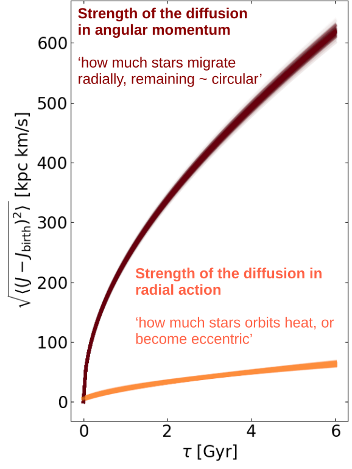
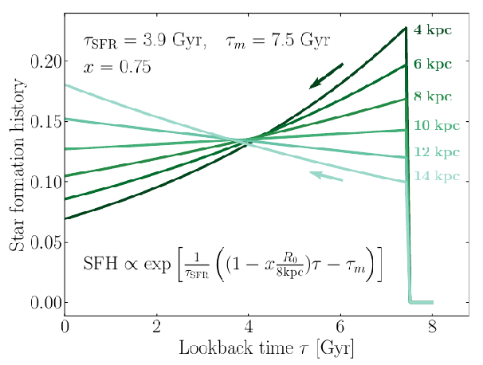
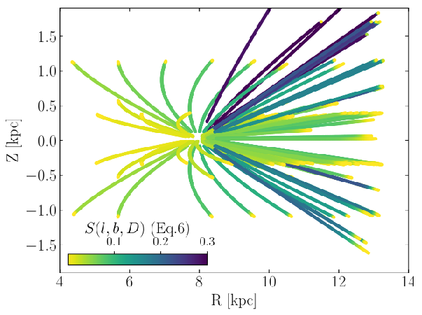
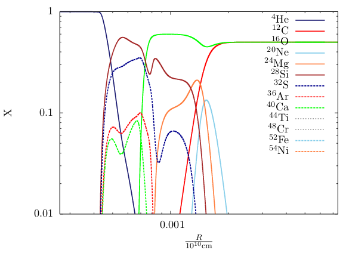

Formation and Evolution of the Milky Way
Can we use the Milky Way as a model organism to tell how disk galaxies form and evolve?
How much dynamical memory is lost to radial migration?
Did the Milky Way disk grow from inside-out? How fast?

Looking at the present-day kinematics stars in the Milky Way disk, and
making a model for formation and evolution of these stars orbits, it seems
that most of the dynamical evolution of the Milky Way disk remained cold:
orbits change size (or angular momentum), but remain close to circular,
without increasing eccentricity much. This is illustrated on the Figure on
the left, showing how angular momemtum and radial action spread as a function
of time after birth. We see that angular momentum (dark brown) spreads about
10 times faster than the radial action (orange), which
quantifies the amount of random radial motion (or 'hotness') in the orbits: the disk evolves a lot,
but remains cold! It can have several implications if it also happens to other
disk galaxies, driving the disks to look exponential, and to loose dynamical memory
of their birth conditions. See the analysis
here and a very quick animation introducing radial migration
there.
Inside-out Growth of the Galactic Disk
Modelling the radial-dependent star formation history of the Galactic disk,
and accounting for the effect of radial mixing (weakening age gradients), we
fit the age-[Fe/H]-spatial distribution of APOGEE stars. The best
fit model implies that the Milky Way disk likely grew from inside-out, of about
43% over the past 8 Gyr. This compares well to redshift-size relations
seen in other disk galaxies.
The best fit star formation history for the Milky Way's low-alpha disk is
plotted on the right: the star formaton time-scale increases with radius.

MW disk stars: migrating 3 kpc scale?
Constructing a simple model for the Galactic disk, modelling when stars were born and with
what metallicity, one can predict the scatter in the age-metallicity relation of disk stars
that is resulting from radial orbit migration (modelled as a global diffusion process in
Galactocentric radius). The inferred strength of radial orbit migration is quite strong,
implying a migration scale of 3.5 kpc over the disk life time. The radial migration model
is illustrated on the left, and the paper available
here
APOGEE Selection Function
Galactic density fitting by star counts requires to know and understand how stars in one's
data set were selected. APOGEE selection function is spatially complex, but opens the door
to many interesting projects when included in such model.
For the inside-out work described above, we have (only approximately and incompletely)
approximated APOGEE selection function. It is available as a fits table with a detailed
description
here.


Nucleosynthesis in black hole accretion disks
Can accretion disks around black holes reach the extreme temperatures and densities needed
for nuclear fusion to occur? In some particular cases of extremely high accretion rates
involving unstable mass transfer, perhaps some elements can be synthetized and released
in winds. An example of isotopes mass fractions profiles ina disk is illustrated here.
I explored this question in a very simplified way (and not always correctly)
during my MSc, the thesis is available
here.